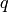
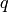

PyBLAW¶
PyBLAW is a python framework for solving one-dimensional system of hyperbolic balance laws.
A one-dimensional system of hyperbolic balance laws is a system of the form

Check out some examples to learn more about how to use PyBLAW.
Using PyBLAW¶
To solve a one-dimensional system of hyperbolic balance laws, we integrate the system over a grid cell (finite volume) to obtain

where  is the cell average of . As such, we need
to approximate
is the cell average of . As such, we need
to approximate
- the flux
at the cell boundaries, and
- the integral of the source
over the cells;
and evolve the sum these of to obtain the time evolution of the cell averages.
The key to approximating the flux term is being able to approximate the solution at the cell boundaries given the cell averages of . This is the reconstruction problem.
To solve a particular system of hyperbolic balance laws, we need to
- reconstruct the solution at various points (cell boundaries and source quadrature points),
- compute the flux and source terms, and
- evolve the system.
This is similar to Godunov’s REA algorithm.
The PyBLAW framework defines base classes to handle/define
- the system,
- the flux,
- the source,
- a reconstructor,
- an evolver,
- a dumper,
- and a solver.
Briefly, the base classes are
- pyblaw.system.System - system parameters, initial conditions, etc;
- pyblaw.flux.Flux - compute the flux (given a reconstruction);
- pyblaw.source.Source - compute the source (given a reconstruction);
- pyblaw.evolver.Evolver - evolve the system;
- pyblaw.dumper.Dumper - dump the solution; and
- pyblaw.solver.Solver - run the solver!
Once you have defined your system by inheriting and overriding the PyBLAW base classes, you would call the Solver’s run method to run the solver.
There are a few things to keep in mind:
- each class has an allocate method that gets called by the solver during initialisation;
- each class has a pre_run method that gets called after the initial conditions are computed; and
- some classes are linked together through various instance variables (eg, the Flux class has a system variable that points to the System class).
API¶
Obtaining PyBLAW¶
Download, build, and install from source.
The latest source distribution is available in either zip or tar format. You can also obtain the source code on GitHub through the PyBLAW project page. You can clone the project by running:
$ git clone git://github.com/memmett/PyBLAW
PyBLAW uses the Python setuptools package for installation.
Contributing¶
Contributions are welcome! Please send comments, suggestions, and/or patches to the primary author (Matthew Emmett). You will be credited.
If you plan to extend or modify PyBLAW in a more substantial way, please see the PyBLAW project page.